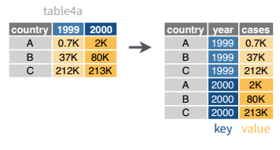
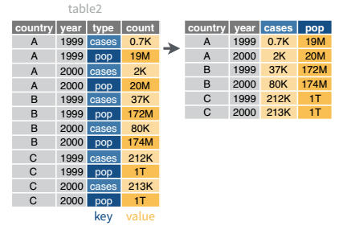

| country | year | cases | population |
|---|---|---|---|
| Afghanistan | 1999 | 745 | 19987071 |
| Afghanistan | 2000 | 2666 | 20595360 |
| Brazil | 1999 | 37737 | 172006362 |
| Brazil | 2000 | 80488 | 174504898 |
| China | 1999 | 212258 | 1272915272 |
| China | 2000 | 213766 | 1280428583 |
Data Joins and Transformations
Broadly, your objective while reading these chapters is to be able to identify data sets which have “messy” formats and determine a sequence of operations to transition the data into “tidy” format. To do this, you should master the following concepts:
- Determine what data format is necessary to generate a desired plot or statistical model.
- Understand the differences between “wide” and “long” format data and how to transition between the two structures.
- Understand relational data formats and how to use data joins to assemble data from multiple tables into a single table.
üìΩ Watch Videos: 25-minutes
üìñ Readings: 75-minutes
üíª Activities: 3
✅ Check-ins: 3
1 Part One: Tidy Data
This week we will be incrementally stepping through each section of Chapter 5 in R4DS.
üìñ Required Reading: R4DS Section 5.2 (Tidy data)
The illustrations below are lifted from an excellent blog post (Lowndes and Horst 2020) about tidy data; they’re reproduced here because
- they’re beautiful and licensed as CCA-4.0-by, and
- they might be more memorable than the equivalent paragraphs of text without illustration.
Most of the time, data does not come in a format suitable for analysis. Spreadsheets are generally optimized for data entry or viewing, rather than for statistical analysis:
- Tables may be laid out for easy data entry, so that there are multiple observations in a single row
- It may be visually preferable to arrange columns of data to show multiple times or categories on the same row for easy comparison
When we analyze data, however, we care much more about the fundamental structure of observations: discrete units of data collection. Each observation may have several corresponding variables that may be measured simultaneously, but fundamentally each discrete data point is what we are interested in analyzing or plotting.
The structure of tidy data reflects this preference for keeping the data in a fundamental form: each observation is in its own row, any observed variables are in single columns. This format is inherently rectangular, which is also important for statistical analysis - our methods are typically designed to work with matrices of data.

![There are two sets of anthropomorphized data tables. The top group of three tables are all rectangular and smiling, with a shared speech bubble reading 'our columns are variables and our rows are observations!'. Text to the left of that group reads “The standard structure of tidy data means that 'tidy datasets are all alike…' The lower group of four tables are all different shapes, look ragged and concerned, and have different speech bubbles reading (from left to right) 'my column are values and my rows are variables', 'I have variables in columns AND in rows', 'I have multiple variables in a single column', and 'I don’t even KNOW what my deal is.' Next to the frazzled data tables is text '...but every messy dataset is messy in its own way. -Hadley Wickham.'](https://www.openscapes.org/img/blog/tidydata/tidydata_2.jpg)
The preference for tidy data has several practical implications: it is easier to reuse code on tidy data, allowing for analysis using a standardized set of tools (rather than having to build a custom tool for each data analysis job).
![On the left is a happy cute fuzzy monster holding a rectangular data frame with a tool that fits the data frame shape. On the workbench behind the monster are other data frames of similar rectangular shape, and neatly arranged tools that also look like they would fit those data frames. The workbench looks uncluttered and tidy. The text above the tidy workbench reads 'When working with tidy data, we can use the same tools in similar ways for different datasets…' On the right is a cute monster looking very frustrated, using duct tape and other tools to haphazardly tie data tables together, each in a different way. The monster is in front of a messy, cluttered workbench. The text above the frustrated monster reads '...but working with untidy data often means reinventing the wheel with one-time approaches that are hard to iterate or reuse.'](https://www.openscapes.org/img/blog/tidydata/tidydata_3.jpg)
In addition, standardized tools for data analysis means that it is easier to collaborate with others: if everyone starts with the same set of assumptions about the dataset, you can borrow methods and tools from a collaborator’s analysis and easily apply them to your own dataset.


Tidy data makes it easier to collaborate with others and analyze new data using standardized workflows. In a perfect world, all data would come in the right format for our needs, but this is often not the case. We will spend the next few weeks learning about how to use R to reformat our data to follow the tidy data framework and see why this is so important. By the end of this chapter, you will have the skills needed to wrangle and transform the most common “messy” data sets into “tidy” form.
1.0.1 ✅ Check-in 4.1: Messy Data
These datasets all display the same data: TB (Tuberculosis) cases documented by the WHO (World Health Organization) in Afghanistan, Brazil, and China, between 1999 and 2000. There are four variables: country, year, cases, and population, but each table has a different layout.
Tip
All of these data sets are “built-in” to the tidyr package!
For each of the Tables (datasets) above, answer the following question.
Which of the principles of tidy data does the table violate?
- Variables are spread across multiple columns
- The same observation occupies multiple rows
- There are multiple values in each cell
Here, each observation is a single row, each variable is a column, and everything is nicely arranged for e.g. regression or statistical analysis. We can easily compute another measure, such as cases per 100,000 population, by taking cases / population * 100000 (this would define a new column).
| country | year | type | count |
|---|---|---|---|
| Afghanistan | 1999 | cases | 745 |
| Afghanistan | 1999 | population | 19987071 |
| Afghanistan | 2000 | cases | 2666 |
| Afghanistan | 2000 | population | 20595360 |
| Brazil | 1999 | cases | 37737 |
| Brazil | 1999 | population | 172006362 |
| Brazil | 2000 | cases | 80488 |
| Brazil | 2000 | population | 174504898 |
| China | 1999 | cases | 212258 |
| China | 1999 | population | 1272915272 |
| China | 2000 | cases | 213766 |
| China | 2000 | population | 1280428583 |
Here, we have 4 columns again, but we now have 12 rows (instead of 6): one of the columns is an indicator of which of two numerical observations is recorded in that row; a second column stores the value (e.g., cases, population). This form of the data is more easily plotted in ggplot2, if we want to show trend lines for both cases and population, but computing per capita cases would be much more difficult in this form than in the arrangement in Table 1!
| country | year | rate |
|---|---|---|
| Afghanistan | 1999 | 745/19987071 |
| Afghanistan | 2000 | 2666/20595360 |
| Brazil | 1999 | 37737/172006362 |
| Brazil | 2000 | 80488/174504898 |
| China | 1999 | 212258/1272915272 |
| China | 2000 | 213766/1280428583 |
This form has only 3 columns, because the rate variable (which is a character) stores both the case count and the population. We can’t do anything with this format as it stands, because we can’t do math on data stored as characters. However, this form might be easier to read and record for a human being.
| country | 1999 | 2000 |
|---|---|---|
| Afghanistan | 745 | 2666 |
| Brazil | 37737 | 80488 |
| China | 212258 | 213766 |
| country | 1999 | 2000 |
|---|---|---|
| Afghanistan | 19987071 | 20595360 |
| Brazil | 172006362 | 174504898 |
| China | 1272915272 | 1280428583 |
In this form, we have two tables - one for population, and one for cases. Each year’s observations are in a separate column. This format is often found in separate sheets of an Excel workbook. To work with this data, we’ll need to transform each table so that there is a column indicating which year an observation is from, and then merge the two tables together by country and year.
| country | century | year | rate |
|---|---|---|---|
| Afghanistan | 19 | 99 | 745/19987071 |
| Afghanistan | 20 | 00 | 2666/20595360 |
| Brazil | 19 | 99 | 37737/172006362 |
| Brazil | 20 | 00 | 80488/174504898 |
| China | 19 | 99 | 212258/1272915272 |
| China | 20 | 00 | 213766/1280428583 |
Table 5 is very similar to Table 3, but the year has been separated into two columns - century, and year. This is more common with year, month, and day in separate columns (or date and time in separate columns), often to deal with the fact that spreadsheets don’t always handle dates the way you’d hope they would.
2 Part Two: Reshaping Data

2.1 Pivot Operations
It’s fairly common for data to come in forms which are convenient for either human viewing or data entry. Unfortunately, these forms aren’t necessarily the most friendly for analysis. There are two main “layouts” a dataset can have:
- “wide” format
- “long” format
The image below shows the same dataset presented in each layout.
![A diagram showing two table representations side by side, labeled 'wide' on the left and 'long' on the right. On the 'wide' side: a table with columns labeled id, x, y, z. Beneath id are red 1 and blue 2; beneath x are a and b; beneath y are c and d; beneath z are e and f. On the 'long' side: three columns labeled id, key, val. The id column alternates 1 (red) and 2 (blue) across six rows; key cycles through x (green), y (purple), z (orange); val shows corresponding values a, b, c, d, e, f. The visual illustrates how the same data can be represented in wide format (fewer rows, more columns) versus long (more rows, fewer variable columns) — a core idea in tidy data transformations such as pivoting.](https://github.com/gadenbuie/tidyexplain/raw/main/images/static/png/original-dfs-tidy.png)
Sometimes we will be given data that is in one layout and we will need to transform it into a different layout. This animation illustrates the process of going from a wide data layout to a long data layout, and how to go from a long data layout back to a wide data layout. Here, we are using the pivot_wider() and pivot_longer() functions from the tidyr package in R.

Let’s explore each of these formats in more depth
2.1.1 Longer
üìñ Required Reading: R4DS Section 5.3 (Lengthening data)
In many cases, the data come in what we might call “wide” form - some of the column names are not names of variables (e.g., year), but instead, are themselves values of another variable (e.g., 1991, 1992).
Tip
Notice that I’m surrounding 1999 in back ticks (` `). I need to do this because a number is not a syntactically correct variable name, so using cols = 1999:2000 would not work!
Tables 4a and 4b (from above) are good examples of data which is in “wide” form and should be transformed into a long(er) form. The values of year are spread across multiple columns.
table4a# A tibble: 3 × 3
country `1999` `2000`
<chr> <dbl> <dbl>
1 Afghanistan 745 2666
2 Brazil 37737 80488
3 China 212258 213766table4b# A tibble: 3 × 3
country `1999` `2000`
<chr> <dbl> <dbl>
1 Afghanistan 19987071 20595360
2 Brazil 172006362 174504898
3 China 1272915272 1280428583The solution to this is to rearrange the data into “long form”: to take the columns which contain values and “stack” them, adding a variable to indicate which column each value came from. To do this, we have to duplicate the values in any column which isn’t being stacked (e.g. country, in both the example above and the image below).

Once our data are in long form, we can (if necessary) separate values that once served as column labels into actual variables, and we’ll have tidy(er) data.
table4a |>
pivot_longer(cols = `1999`:`2000`,
names_to = "year",
values_to = "cases"
)# A tibble: 6 × 3
country year cases
<chr> <chr> <dbl>
1 Afghanistan 1999 745
2 Afghanistan 2000 2666
3 Brazil 1999 37737
4 Brazil 2000 80488
5 China 1999 212258
6 China 2000 213766table4b |>
pivot_longer(cols = -country,
names_to = "year",
values_to = "population"
)# A tibble: 6 × 3
country year population
<chr> <chr> <dbl>
1 Afghanistan 1999 19987071
2 Afghanistan 2000 20595360
3 Brazil 1999 172006362
4 Brazil 2000 174504898
5 China 1999 1272915272
6 China 2000 1280428583The columns are moved to a variable with the name passed to the argument names_to (hopefully, that is easy to remember), and the values are moved to a variable with the name passed to the argument values_to (again, hopefully easy to remember).
We identify ID variables (variables which we don’t want to pivot) by not including them in the pivot statement. We can do this in one of two ways:
- select only variables (columns) we want to pivot (e.g.,
cols = `1999`:`2000`) - select variables (columns) we don’t want to pivot, using
-to remove them (e.g.,cols = -country).
Which option is easier depends how many things you’re pivoting (and how the columns are structured).
2.1.2 Wider
üìñ Required Reading: R4DS Section 5.3 (Widening data)
While it’s very common to need to transform data into a longer format, it’s not that uncommon to need to do the reverse operation. When an observation is scattered across multiple rows, your data is too long and needs to be made wider again.
Tip
Notice that I’m not using a cols argument for pivot_wider()! This is because pivot_wider() only modifies the columns specified in the names_from and values_from arguments.
Table 2 (from above) is an example of a table that is in long format but needs to be converted to a wider layout to be “tidy” - there are separate rows for cases and population, which means that a single observation (one year, one country) has two rows.
table2# A tibble: 12 × 4
country year type count
<chr> <dbl> <chr> <dbl>
1 Afghanistan 1999 cases 745
2 Afghanistan 1999 population 19987071
3 Afghanistan 2000 cases 2666
4 Afghanistan 2000 population 20595360
5 Brazil 1999 cases 37737
6 Brazil 1999 population 172006362
7 Brazil 2000 cases 80488
8 Brazil 2000 population 174504898
9 China 1999 cases 212258
10 China 1999 population 1272915272
11 China 2000 cases 213766
12 China 2000 population 1280428583
table2 |>
pivot_wider(names_from = type,
values_from = count
)# A tibble: 6 × 4
country year cases population
<chr> <dbl> <dbl> <dbl>
1 Afghanistan 1999 745 19987071
2 Afghanistan 2000 2666 20595360
3 Brazil 1999 37737 172006362
4 Brazil 2000 80488 174504898
5 China 1999 212258 1272915272
6 China 2000 213766 12804285832.2 Separating and Uniting Variables
We will talk about strings and regular expressions later in the course, but there’s a task that is fairly commonly encountered with functions that belong to the tidyr package: separating variables into two different columns separate() and it’s complement, unite(), which is useful for combining two variables into one column.
Table 3 from before is a great example of when you would want to separate the values of a column into different columns. In this dataset, the variable rate is recorded as 745/19987071, where the first number is the amount of cases and the second number is the population.
![A diagram labeled 'table3' shows two tables side by side with an arrow pointing from left to right. On the left, a table has columns country, year, and rate. The rate column contains combined values such as 0.7K/19M, 2K/20M, 37K/172M, 80K/174M, 212K/1T, and 213K/1T, where the first part represents cases and the second part represents population. On the right, the data is transformed by separating rate into two distinct columns labeled cases and pop. Each row now shows the same country and year with the cases value (for example 0.7K, 2K, 37K) in one column and the corresponding population value (19M, 20M, 172M, etc.) in the other. The visual demonstrates how splitting a combined column into multiple columns clarifies the data.](images/week-4/tidyr_separate.png)
table3 |>
separate_wider_delim(cols = rate,
names = c("cases", "population"),
delim = "/",
cols_remove = FALSE
)# A tibble: 6 × 5
country year cases population rate
<chr> <dbl> <chr> <chr> <chr>
1 Afghanistan 1999 745 19987071 745/19987071
2 Afghanistan 2000 2666 20595360 2666/20595360
3 Brazil 1999 37737 172006362 37737/172006362
4 Brazil 2000 80488 174504898 80488/174504898
5 China 1999 212258 1272915272 212258/1272915272
6 China 2000 213766 1280428583 213766/1280428583I’ve left the rate column in the original data frame (cols_remove = FALSE) just to make it easy to compare and verify that yes, it worked.
And, of course, there is a complementary operation, which is when it’s necessary to join two columns to get a useable data value.
![A diagram labeled 'table5' shows two tables side by side with an arrow pointing from left to right. On the left, a table has three columns: country, century, and year. Each country appears twice, once with century 19 and year 99, and once with century 20 and year 00. On the right, the data is transformed by uniting the century and year columns into a single year column that contains full values such as 1999 and 2000. Each row now shows the country alongside the combined year. The visual demonstrates how uniting multiple columns can merge partial values into a single meaningful column.](images/week-4/tidyr_unite.png)
table5 |>
unite(col = "year",
c(century, year),
sep = ''
)# A tibble: 6 × 3
country year rate
<chr> <chr> <chr>
1 Afghanistan 1999 745/19987071
2 Afghanistan 2000 2666/20595360
3 Brazil 1999 37737/172006362
4 Brazil 2000 80488/174504898
5 China 1999 212258/1272915272
6 China 2000 213766/1280428583
NoteLearn More in R4DS
The separate_xxx() is actually a family of experimental functions stemming from the superseeded separate() function. You can read more about separate_xxx() and unite() in r4ds and r4ds.
2.2.1 ✅ Check-in 4.2: Practice with Pivoting
Install the liver package and then load in the cereal data set:
library(liver)
data(cereal)
head(cereal) name manuf type calories protein fat sodium fiber carbo
1 100% Bran N cold 70 4 1 130 10.0 5.0
2 100% Natural Bran Q cold 120 3 5 15 2.0 8.0
3 All-Bran K cold 70 4 1 260 9.0 7.0
4 All-Bran with Extra Fiber K cold 50 4 0 140 14.0 8.0
5 Almond Delight R cold 110 2 2 200 1.0 14.0
6 Apple Cinnamon Cheerios G cold 110 2 2 180 1.5 10.5
sugars potass vitamins shelf weight cups rating
1 6 280 25 3 1 0.33 68.40297
2 8 135 0 3 1 1.00 33.98368
3 5 320 25 3 1 0.33 59.42551
4 0 330 25 3 1 0.50 93.70491
5 8 -1 25 3 1 0.75 34.38484
6 10 70 25 1 1 0.75 29.50954Question 1: Create a new dataset called cereals_long, that has three columns:
The
nameof the cerealA column called
Nutrientwith values"protein","fat", or"fiber".A column called
Amountwith the corresponding amount of the nutrient.
Caution
You are expected to use pivot_longer() to perform this operation!
3 Part Three: Joining data
The final essential data tidying and transformation skill you need to acquire is joining tables. It is common for data to be organized relationally - that is, certain aspects of the data apply to a group of data points, and certain aspects apply to individual data points, and there are relationships between the individual data points and the groups of data points that have to be documented.
Table joins allow us to combine information stored in different tables, keeping certain information (the stuff we need) while discarding extraneous information.
keys are values that are found in multiple tables that can be used to connect the tables. A key (or set of keys) uniquely identify an observation. A primary key identifies an observation in its own table. A foreign key identifies an observation in another table.
There are 3 main types of table joins:
Mutating joins, which add columns from one table to matching rows in another table
Ex: adding birthday to the table of all individuals in a classFiltering joins, which remove rows from a table based on whether or not there is a matching row in another table (but the columns in the original table don’t change)
Ex: finding all teachers or students who have class ClassIDSet operations, which treat observations as set elements (e.g. union, intersection, etc.)
Ex: taking the union of all student and teacher IDs to get a list of individual IDs
üìñ Required Reading: R4DS Chapter 19 (Joins)
3.1 Animating Joins
Suppose we start with two tables, x and y:
![Two datasets are pictured. The dataset on the left is labeled 'X' and contains three rows of observations colored red, blue, and green. The first column has numbers 1, 2, and 3 next to each of the colors indicating what row that observation is in. There is a second column with values of x1, x2, and x3. The dataset on the right is labeled 'Y' and contains three rows of observations colored red, blue, and purple. The first column has numbers 1, 2, and 4 next to each of the colors indicating what row that observation is in. There is a second column with values of y1, y2, and y4.](https://raw.githubusercontent.com/gadenbuie/tidyexplain/master/images/static/png/original-dfs.png)
3.2 Mutating Joins
We’re primarily going to focus on mutating joins, as filtering joins can be accomplished by … filtering … rather than by table joins.
An inner_join() only keeps any rows that are included in both tables, but keeps every column.
![A looping animation shows two tables on the left being joined with matching key values to produce a combined output on the right. In the first table, keys 1, 2, and 3 (colored red, blue, green) each pair with a value x1, x2, x3. In the second table, keys 1, 2, and 4 (same red, blue, and a different color for 4) each pair with values y1, y2, y3. Lines connect matching keys (1 and 2). The output table shows only keys 1 and 2, each with their x and y values combined, while keys that don’t match (3 in the first, 4 in the second) are excluded.](https://raw.githubusercontent.com/gadenbuie/tidyexplain/master/images/inner-join.gif)
But what if we want to keep all of the rows in x? We would do a left_join() (since x is on the left).
![A looping animation showing a “left” table on the left and a “right” table on the left-join operation arrow pointing to a result on the right. The left table has keys 1 (red), 2 (blue), and 3 (green) with values x1, x2, x3. The right table has keys 1 (red), 2 (blue), and 4 (purple) with values y1, y2, y3. Lines connect matching keys 1 and 2. The resulting joined table includes all rows from the left table (keys 1, 2, 3). For keys 1 and 2, the x and y values are combined; for key 3 (which has no match in the right table), the y value is blank or missing.](https://raw.githubusercontent.com/gadenbuie/tidyexplain/master/images/left-join.gif)
If there are multiple matches in the y table, though, we might have to duplicate rows in x. This is still a left join, just a more complicated one.
![A looping animation shows a “left” table and a “right” table being joined, with extra matching rows in the right table. The left table has keys 1 (red), 2 (blue), and 3 (green) with values x1, x2, x3. The right table has keys 1 (red), 2 (blue), 2 (another blue), and 4 (purple) with values y1, y2, y5, y4. Lines connect matching keys (1, 2, 2). The result table includes all rows from the left table: for key 1, the match yields a row with x1 and y1; for key 2, there are two matching rows, so x2 pairs with y2 and also x2 pairs with y5 (two rows); for key 3, no match, so x3 appears with a missing y value.](https://raw.githubusercontent.com/gadenbuie/tidyexplain/master/images/left-join-extra.gif)
If we wanted to keep all of the rows in y, we would do a right_join() (since y is on the right):

(or, we could do a left join with y and x, but… either way is fine).
And finally, if we want to keep all of the rows of both x and y, we’d do a full_join():
![A looping animation shows two tables on the left being joined with a ‘full join’ operation arrow pointing right. The left table has keys 1 (red), 2 (blue), 3 (green) with values x1, x2, x3. The right table has keys 1 (red), 2 (blue), 4 (purple) with values y1, y2, y4. Lines connect matching keys 1 and 2. The resulting table on the right includes all rows from both original tables: for keys 1 and 2, x and y values are combined; for key 3 (no match on right) the y field is missing/NA; for key 4 (no match on left) the x field is missing/NA while y is retained.](https://raw.githubusercontent.com/gadenbuie/tidyexplain/master/images/full-join.gif)
Every join has a “left side” and a “right side” - so in XXXX_join(A, B), A is the left side, and B is the right side.
Joins are differentiated based on how they treat the rows and columns of each side. In mutating joins, the columns from both sides are always kept. The table below summarizes which rows are kept from each side of the join, for different mutating joins.
| Join Type | Left Side | Right Side |
|---|---|---|
| inner | matching | matching |
| left | all | matching |
| right | matching | all |
| outer | all | all |
3.3 Filtering Joins
These joins do not merge two datasets together! Insead, they filter the values of one dataset based on the values of another dataset.
Tip
You can think of this as a relative of using the inclusion operator (%in%) inside of a filter() statement (e.g., filter(day %in% c("Mon", "Tues", "Wed"))).
Tip
You can think of this as a relative of using a ! in front of the inclusion operator (%in%) inside of a filter() statement (e.g., filter(! day %in% c("Mon", "Tues", "Wed"))). The ! negates the %in% so only Thurs, Fri, Sat, and Sun would be included.
A semi_join() keeps rows in x that have a match in y. Notice that the resulting dataset is a modification of the original x dataset—nothing from y has been added to x!
![A looping animation shows two tables side by side and the result of a semi join. The left table (x) has keys 1 (red), 2 (blue), 3 (green) paired with x1, x2, x3. The right table (y) has keys 1 (red), 2 (blue), 4 (purple) paired with y1, y2, y4. Matching key rows (1 and 2) are connected. The resulting output table includes only the rows from the left table that have matches in the right table: key 1 with x1 and key 2 with x2. The left row with key 3 is dropped, and no new columns from y are shown.](https://github.com/gadenbuie/tidyexplain/raw/main/images/semi-join.gif)
A anti_join() keeps rows in x that do not have a match in y. Notice that the resulting dataset is a modification of the original x dataset—nothing from y has been added to x!
![A looping animation shows two tables being compared under an ‘anti join’ operation. The left table has keys 1 (red), 2 (blue), 3 (green) paired with values x1, x2, x3. The right table has keys 1 (red), 2 (blue), and 4 (purple) paired with values y1, y2, y4. Lines indicate matching keys (1 and 2). The resulting table on the right contains only the rows from the left table that do not have a match in the right: key 3 with x3 (green). Keys 1 and 2 are excluded because they have matches in the right table.](https://github.com/gadenbuie/tidyexplain/raw/main/images/anti-join.gif)
3.3.1 ✅ Check-in 4.3: Practice with Joins
The following code creates three datasets / tibbles:
prof_info <- tibble(
professor = c("Bodwin",
"Theobold",
"Robinson",
"Mann",
"Ruiz"),
undergrad_school = c("Harvard",
"Colorado Mesa University",
"Winona State University",
"Carlton College",
"Reed College"),
grad_school = c("UNC",
"Montana State University",
"University of Nebraska-Lincoln",
"University of Michigan",
"Oregon State University")
)
prof_course <- tidyr::tibble(
professor = c("Bodwin",
"Robinson",
"Theobold",
"Mann",
"Carlton"),
Stat_331 = c(TRUE,
TRUE,
TRUE,
TRUE,
TRUE),
Stat_330 = c(FALSE,
TRUE,
FALSE,
FALSE,
FALSE),
Stat_431 = c(TRUE,
TRUE,
TRUE,
TRUE,
FALSE)
)
course_info <- tibble(
course = c("Stat_331",
"Stat_330",
"Stat_431"),
num_sections = c(8,
3,
1)
)Here is what they look like once created:
prof_info# A tibble: 5 × 3
professor undergrad_school grad_school
<chr> <chr> <chr>
1 Bodwin Harvard UNC
2 Theobold Colorado Mesa University Montana State University
3 Robinson Winona State University University of Nebraska-Lincoln
4 Mann Carlton College University of Michigan
5 Ruiz Reed College Oregon State University prof_course # A tibble: 5 × 4
professor Stat_331 Stat_330 Stat_431
<chr> <lgl> <lgl> <lgl>
1 Bodwin TRUE FALSE TRUE
2 Robinson TRUE TRUE TRUE
3 Theobold TRUE FALSE TRUE
4 Mann TRUE FALSE TRUE
5 Carlton TRUE FALSE FALSE course_info# A tibble: 3 × 2
course num_sections
<chr> <dbl>
1 Stat_331 8
2 Stat_330 3
3 Stat_431 1These datasets contain information about five Cal Poly professors, their educational history, the classes they are able to teach, and the number of sections of each class that need to be assigned.
a) Combine datasets 1 and 2 to make this dataset:
professor undergrad_school grad_school Stat_331 Stat_330 Stat_431
Bodwin Harvard UNC TRUE FALSE TRUE
Theobold Colorado Mesa University Montana State Unive… TRUE FALSE TRUE
Robinson Winona State University University of Nebra… TRUE TRUE TRUE
Mann Carlton College University of Michi… TRUE FALSE TRUEb) Combine datasets 1 and 2 to make this dataset:
professor undergrad_school grad_school Stat_331 Stat_330 Stat_431
Bodwin Harvard UNC TRUE FALSE TRUE
Theobold Colorado Mesa University Montana State Unive… TRUE FALSE TRUE
Robinson Winona State University University of Nebra… TRUE TRUE TRUE
Mann Carlton College University of Michi… TRUE FALSE TRUE
Ruiz Reed College Oregon State Univer… NA NA NAc) Combine datasets 2 and 3 to make this dataset:
professor course can_teach num_sections
Bodwin Stat_331 TRUE 8
Bodwin Stat_330 FALSE 3
Bodwin Stat_431 TRUE 1
Robinson Stat_331 TRUE 8
Robinson Stat_330 TRUE 3
Robinson Stat_431 TRUE 1
Theobold Stat_331 TRUE 8
Theobold Stat_330 FALSE 3
Theobold Stat_431 TRUE 1
Mann Stat_331 TRUE 8
Mann Stat_330 FALSE 3
Mann Stat_431 TRUE 1
Carlton Stat_331 TRUE 8
Carlton Stat_330 FALSE 3
Carlton Stat_431 FALSE 1References
Lowndes, Julie, and Allison Horst. 2020. “Tidy Data for Efficiency, Reproducibility, and Collaboration.” Blog. Openscapes. https://www.openscapes.org/blog/2020/10/12/tidy-data//.